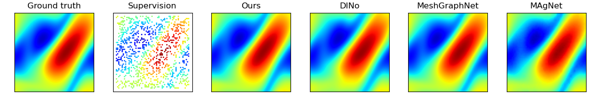
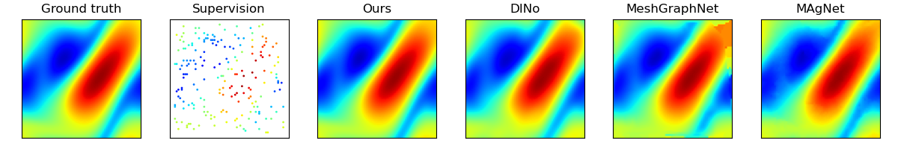

Spatial Resolution: 25% Temporal resolution: 1/4
 Time:Spatial Resolution: 5% Temporal resolution: 1/1
 Time:Spatial Resolution: 25% Temporal resolution: 1/1
Drag the spheres to rotate
Spatial Resolution: 5% Temporal resolution: 1/1
Drag the spheres to rotate
|
|
 GitHub (soon)
GitHub (soon)